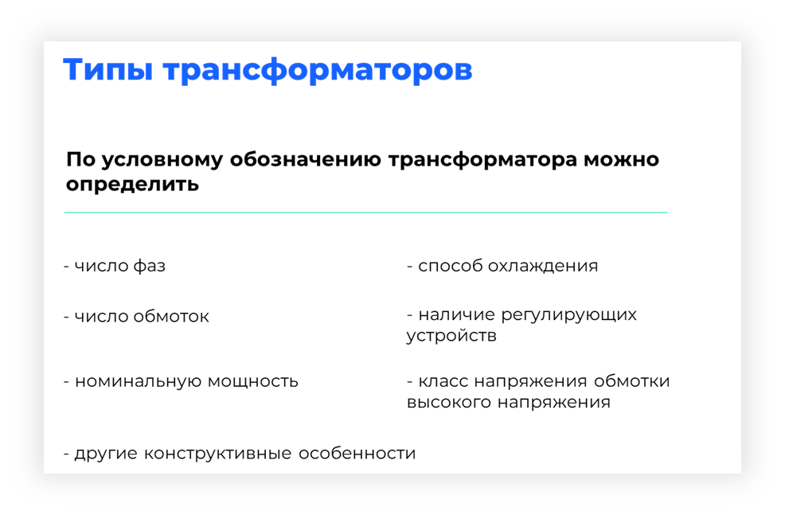

Типы трансформаторов

Электротехническая промышленность выпускает большое число типоразмеров силовых трёхфазных и однофазных трансформаторов, отличающихся мощностью, номинальным напряжением, числом обмоток и способами охлаждения. Все трансформаторы делятся на типы и маркируются в соответствии с их конструкцией и назначением.
Важно отметить, что при выборе типа трансформатора необходимо учитывать его эффективность и стоимость. Более эффективные трансформаторы могут иметь более высокую стоимость, однако они могут окупиться за счет снижения потерь энергии и повышения эффективности системы электропитания.